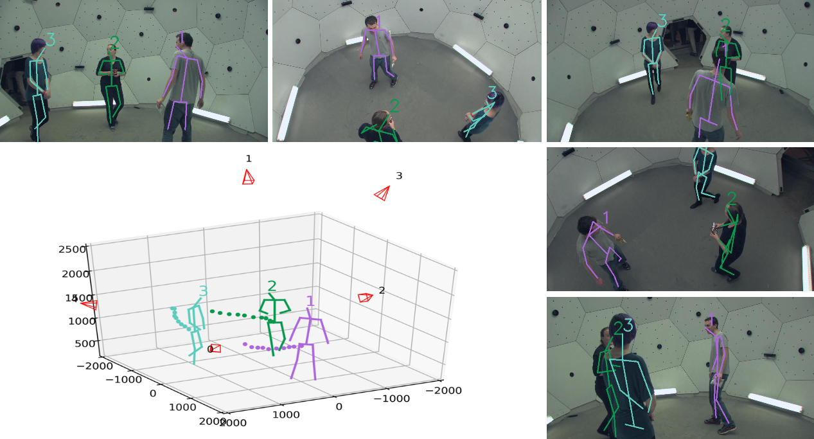

Yifu Zhang 张一夫I am a third-year (2019-now) M.S. student at Huazhong University of Science and Technology, supervised by Prof. Xinggang Wang and Prof. Wenyu Liu. My research interest is computer vision, especially multi-object tracking. I obtained my bachelor degree from Huazhong University of Science and Technology. I interned at IM Group of Microsoft Research Aisa, mentored by Chunyu Wang. I also interned at ByteDance, mentored by Dongdong Yu. Github | Google Scholar | Linkedin Email: zhangyifu0829 AT gmail DOT com |
|
News
[2022/03] We are organizing Multiple Object Tracking and Segmentation in Complex Environments Workshop, ECCV 2022.Publications

VoxelTrack: Multi-Person 3D Human Pose Estimation and Tracking in the Wild
IEEE Transactions on Pattern Analysis and Machine Intelligence (TPAMI), 2022
[paper]
FairMOT: On the Fairness of Detection and Re-Identification in Multi-Object Tracking
Preprints

Academic Service
- Conference Reviewer: CVPR 2022, ECCV 2022
- Journal Reviewer: IJCV, TCSVT, Pattern Recognition, Neurocomputing, NCAA
- Workshop Organizer: Multiple Object Tracking and Segmentation in Complex Environments Workshop, ECCV 2022.
| © Yifu Zhang | Last update: April 2022 |